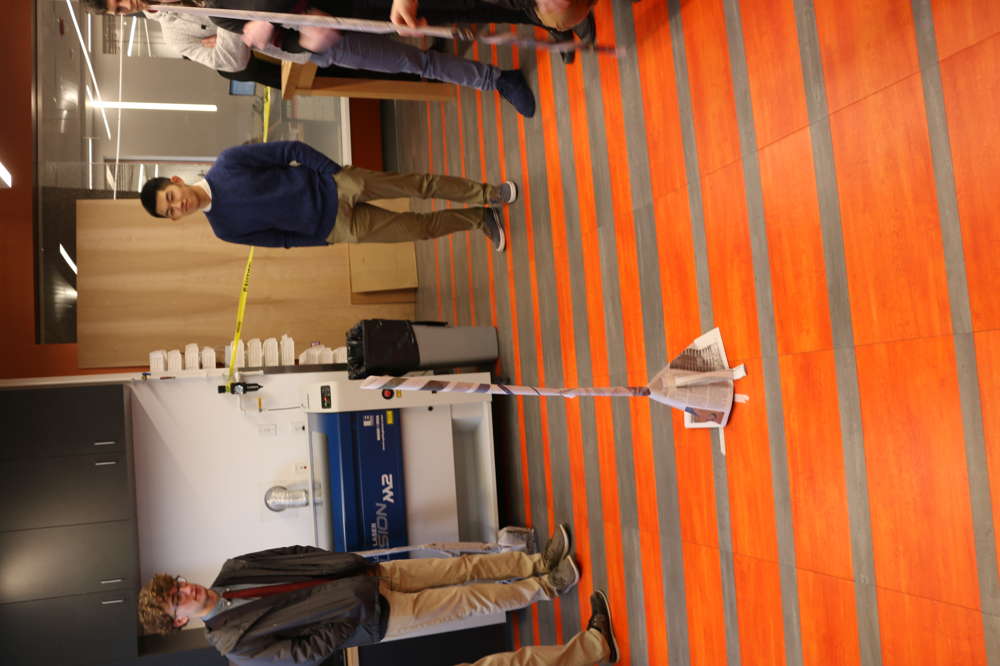
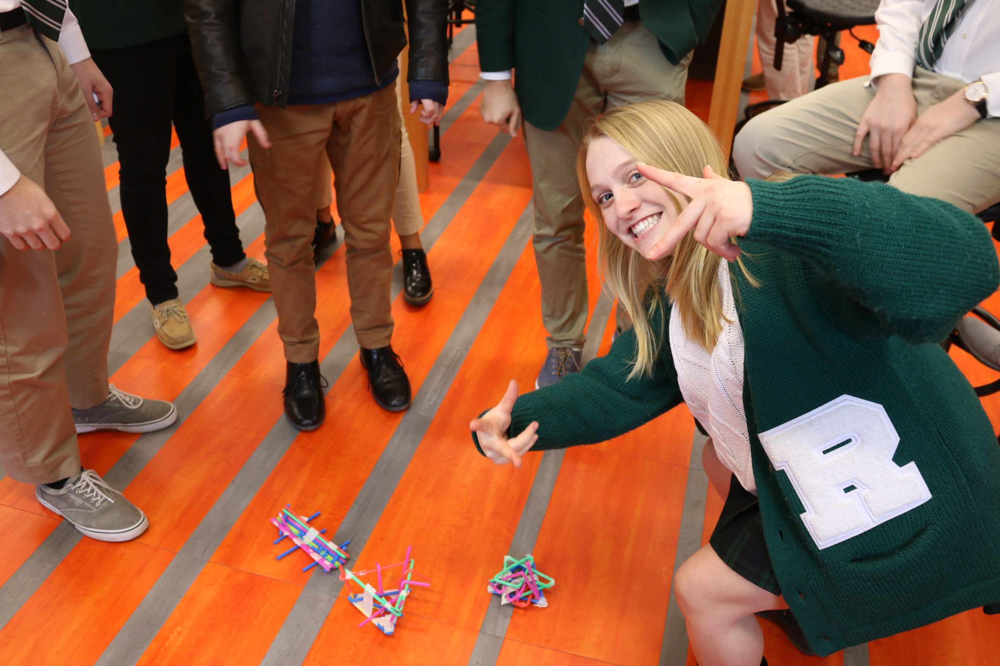

To start off our class, We participated in class challenges. There were two seperate challenges for us to complete. One was to build a tower out of newspaper that could withstand the airflow of a fan, and the other one was to build a structure out of straws that could catch a golf ball.
My group was able to build our tower fairly well. We used a cone of newspaper as the base, with some rolled up newspaper sticking out of the top for height. We also added some supports along the sides of the cone and underneath it to prevent it from falling over. I was the one who decided on the cone shape, and also helped put everything together. It easily withstood the wind from hte fan.
The second challenge we did was the golf ball drop. My group had a considerably harder time completeing this challenge. In the end we settled on a boat shape (on far left of picture above). I helped bulid the supports. It failed to catch the golf ball properly, due to not being sturdy enough or having high enough walls.